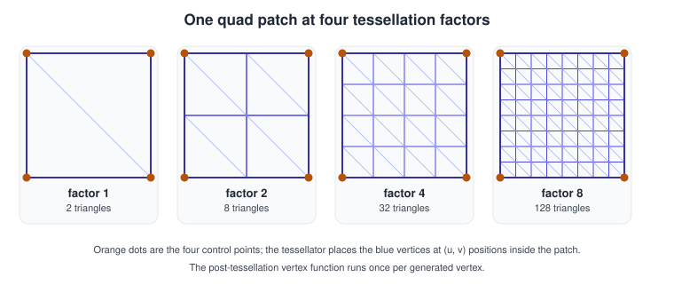
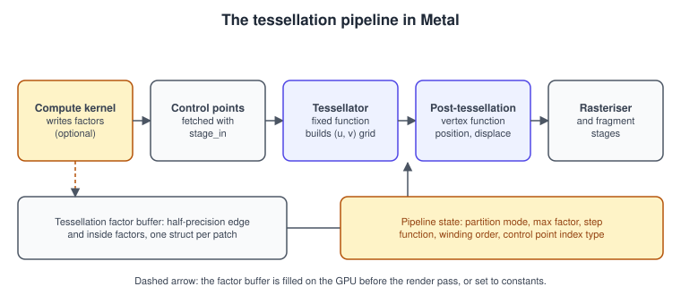
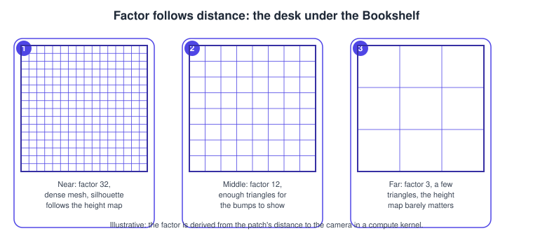
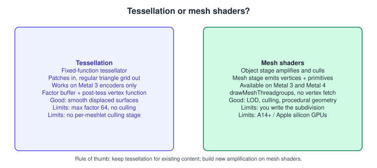

Tessellation in Metal
|
This content was generated with the assistance of AI and should be verified against the official documentation before being relied on in production. |
Tessellation turns a coarse description of a surface, a patch of a few control points, into as many triangles as the current view needs. The mesh stored in memory stays small, the silhouette stays smooth when the camera is close, and the triangle count drops when the camera moves away. Metal has offered a fixed-function tessellator since iOS 10 and macOS 10.12, and it has barely changed since. What changed is its place: since mesh shaders arrived in iOS 16 and macOS 13, and since Metal 4, tessellation is the older of the two amplification paths. This page explains how it works, builds a complete example, and ends with the decision between tessellation and mesh shaders.
The facts were checked in November 2026. The versions documented are Metal 4 on the 26 operating systems and Metal Shading Language 4.1 on the 27 operating systems (Xcode 27). Tessellation itself is available on every Metal 3 capable GPU and uses the Metal 3 style API (MTLRenderCommandEncoder); the documentation of the Metal 4 render command encoder lists draw calls for primitives, indexed primitives and mesh threadgroups, but no patch draw, and MTL4RenderPipelineDescriptor has no tessellation state. A Metal 4 renderer therefore keeps the Metal 3 encoder for the tessellated pass, which is the fallback path the Metal Bookshelf already carries, or uses mesh shaders instead. The example below runs in the app’s Metal 3 path on iOS, iPadOS, macOS, tvOS and visionOS.
In the running example (a multiplatform SwiftUI app hosting an MTKView, with a visionOS target) this page adds an optional detour between the shadow stage and the many-books stage: the desk under the shelf becomes a tessellated height-mapped surface. Setup and the frame loop are in Hello Triangle with Metal 4 and MetalKit, MTKView and SwiftUI; the compute pattern used for the factors is in Compute Kernels. The same idea in other APIs is in Geometry and Tessellation Shaders (OpenGL) and, as a concept, in Advanced Pipeline Stages.
What tessellation does

A tessellated draw works on patches instead of triangles. A patch is a small group of control points, 3 for a triangle patch and 4 for a quad patch in the usual case, plus optional per-patch data. For every patch the tessellator needs numbers: how many segments each edge is cut into and how many the interior is cut into. These are the tessellation factors. The tessellator is a fixed-function unit: it takes the factors and produces a regular grid of points described by barycentric coordinates (triangle patches) or by a pair (u, v) in the unit square (quad patches). It never sees your positions.
Your code runs at two places:
-
Before the tessellator, as a compute kernel that writes the factors (or nothing, if you set a constant factor from the CPU).
-
After the tessellator, in the post-tessellation vertex function. It receives the control points of the patch and the
(u, v)position of one generated vertex and returns a clip-space position, so this is where you interpolate the control points and displace the surface.

Compared with the classic hull/domain model of other APIs, Metal has no programmable hull stage. The work of the hull shader (choosing factors, transforming control points) is done by an ordinary compute kernel in an earlier pass, and the work of the domain shader is the post-tessellation vertex function. This is simpler to reason about and lets one factor kernel serve many frames, but the factors cost a buffer write and a read.
Patch types and control points
The patch type is declared on the post-tessellation vertex function with the [[patch(quad, 4)]] or [[patch(triangle, 3)]] attribute. The second number is the number of control points per patch and may be anything from 1 up to the limit in the Feature Set Tables (32 on current hardware); it does not have to match the shape (a bicubic Bézier patch has 16). Control points are fetched like vertices: a MTLVertexDescriptor describes them, and the layout step function is .perPatchControlPoint (one record per control point) or .perPatch (one record per patch, for per-patch data such as a material index).
By default control points are read in order, patchCount * numberOfPatchControlPoints consecutive records. If patches share control points, an index buffer avoids duplicating them: set tessellationControlPointIndexType to .uint16 or .uint32 and draw with drawIndexedPatches, which takes the control-point index buffer as an extra argument. A second index buffer, patchIndexBuffer, selects which patches to draw and in what order; it is how a culling kernel can remove patches without compacting the control-point buffer.
Tessellation factors
The factors live in a buffer of half-precision structures that the shading language declares for you:
| Patch type | MSL structure | Fields |
|---|---|---|
Triangle |
|
|
Quad |
|
|
For a quad, the two inside factors control the number of segments along the two directions of the grid, and the four edge factors control the four boundary edges. Adjacent patches that share an edge must write the same factor for it; otherwise the two sides produce different vertices along the shared edge and visible cracks appear. The order of the edges is defined in the tessellation section of the Metal Shading Language specification. The simplest way to avoid cracks is to compute each edge factor only from data that belongs to that edge (for example the distance from the camera to the edge midpoint) so both neighbours get identical values, and to derive the inside factors from the edge factors.
Factors are clamped to the range supported by the partition mode and to maxTessellationFactor of the pipeline, 64 on current Apple GPUs (check the Metal Feature Set Tables for the limit of the target family). A factor of 0 or less culls the patch, which is how a factor kernel discards patches that are outside the frustum or facing away.
Partition modes
tessellationPartitionMode on the render pipeline descriptor decides how a fractional factor becomes a number of segments and how neighbouring levels of detail blend:
| Mode | Behaviour |
|---|---|
|
Rounds up to the next power of two. Cheap and predictable, but the vertex count jumps between levels and the surface visibly pops. |
|
Rounds up to the next integer; spacing is even. Pops when the factor crosses an integer. |
|
Rounds to the next odd number and moves the new vertices smoothly out of the existing ones as the factor grows, so the surface morphs instead of popping. |
|
Same morphing idea starting from an even number of segments. |
For distance-based level of detail the fractional modes are the right default: the factor changes continuously with distance, and the geometry follows it without popping. The integer and power-of-two modes suit fixed factors.
Step function and instances
tessellationFactorStepFunction says how the factor buffer is indexed: .constant (one structure for all patches, the CPU sets it), .perPatch (one per patch, the usual case), .perInstance, or .perPatchAndPerInstance. With instancing, instanceStride in setTessellationFactorBuffer(_:offset:instanceStride:) is the byte distance between the factor blocks of consecutive instances. isTessellationFactorScaleEnabled allows a single global multiplier set per encoder with setTessellationFactorScale(_:), handy for a quality slider without rerunning the factor kernel.
Options at a glance
| Property or call | Meaning |
|---|---|
|
|
|
Upper bound the tessellator applies, up to the hardware limit. |
|
|
|
The format of the factors in the buffer, |
|
|
|
|
|
Enables |
|
Binds the factor buffer (render encoder). |
|
Draws patches; |
These properties are ignored unless vertexFunction is a post-tessellation vertex function, that is, one declared with the patch attribute.
Example: a displaced desk for the Bookshelf
The desk is a 16 by 16 grid of quad patches. Each patch has four control points (a flat quad at y = 0). A compute kernel computes the factor of every patch from the distance between the camera and the patch edges; the post-tessellation vertex function bilinearly interpolates the control points and raises the surface with a procedural wood-grain height function. The fragment function shades with a simple Lambert term and the height as the colour, so nothing else (textures, models) is needed to run it.
Shared types and shaders (MSL)
#include <metal_stdlib>
using namespace metal;
struct ControlPoint {
float3 position [[attribute(0)]];
float2 uv [[attribute(1)]];
};
struct DeskUniforms {
float4x4 viewProjection;
float3 cameraPosition;
float displacementScale;
float maxFactor;
float targetEdgeLength; // desired world-space length of one segment
};
// Factor kernel: one thread per patch, 4 control points per patch.
kernel void desk_factors(
device const ControlPoint* controlPoints [[buffer(0)]],
device MTLQuadTessellationFactorsHalf* factors [[buffer(1)]],
constant DeskUniforms& u [[buffer(2)]],
uint patchID [[thread_position_in_grid]])
{
float3 p0 = controlPoints[patchID * 4 + 0].position;
float3 p1 = controlPoints[patchID * 4 + 1].position;
float3 p2 = controlPoints[patchID * 4 + 2].position;
float3 p3 = controlPoints[patchID * 4 + 3].position;
// Factor of an edge from its midpoint distance and its length: identical for
// both patches that share the edge, so no cracks appear.
auto edgeFactor = [&](float3 a, float3 b) {
float3 mid = 0.5 * (a + b);
float len = distance(a, b);
float dist = max(distance(mid, u.cameraPosition), 0.1);
float segments = len / (u.targetEdgeLength * dist);
return clamp(segments, 1.0, u.maxFactor);
};
// Control point order: 0 bottom-left, 1 bottom-right, 2 top-left, 3 top-right.
float eBottom = edgeFactor(p0, p1);
float eTop = edgeFactor(p2, p3);
float eLeft = edgeFactor(p0, p2);
float eRight = edgeFactor(p1, p3);
MTLQuadTessellationFactorsHalf f;
// This example assumes the edge order left, bottom, right, top; confirm the
// order in the tessellation chapter of the Metal Shading Language specification.
f.edgeTessellationFactor[0] = half(eLeft);
f.edgeTessellationFactor[1] = half(eBottom);
f.edgeTessellationFactor[2] = half(eRight);
f.edgeTessellationFactor[3] = half(eTop);
f.insideTessellationFactor[0] = half(0.5 * (eBottom + eTop));
f.insideTessellationFactor[1] = half(0.5 * (eLeft + eRight));
factors[patchID] = f;
}
struct DeskVertexOut {
float4 position [[position]];
float3 normal;
float height;
};
float deskHeight(float2 uv) {
// Procedural wood-grain bumps, no texture needed.
float grain = sin(uv.x * 90.0 + sin(uv.y * 6.0) * 2.0);
return 0.5 + 0.5 * grain * sin(uv.y * 40.0);
}
[[patch(quad, 4)]]
vertex DeskVertexOut desk_post_tess_vertex(
patch_control_point<ControlPoint> cp [[stage_in]],
float2 uv [[position_in_patch]],
constant DeskUniforms& u [[buffer(2)]])
{
// Bilinear interpolation of the four control points.
float3 bottom = mix(cp[0].position, cp[1].position, uv.x);
float3 top = mix(cp[2].position, cp[3].position, uv.x);
float3 pos = mix(bottom, top, uv.y);
float2 tex = mix(mix(cp[0].uv, cp[1].uv, uv.x), mix(cp[2].uv, cp[3].uv, uv.x), uv.y);
float h = deskHeight(tex);
float hx = deskHeight(tex + float2(0.002, 0.0));
float hz = deskHeight(tex + float2(0.0, 0.002));
pos.y += h * u.displacementScale;
DeskVertexOut out;
out.position = u.viewProjection * float4(pos, 1.0);
out.normal = normalize(float3(-(hx - h) * 40.0 * u.displacementScale, 1.0,
-(hz - h) * 40.0 * u.displacementScale));
out.height = h;
return out;
}
fragment float4 desk_fragment(DeskVertexOut in [[stage_in]]) {
float3 lightDir = normalize(float3(0.3, 1.0, 0.2));
float lambert = saturate(dot(normalize(in.normal), lightDir));
float3 wood = mix(float3(0.35, 0.20, 0.10), float3(0.60, 0.40, 0.22), in.height);
return float4(wood * (0.25 + 0.75 * lambert), 1.0);
}Points worth noticing:
-
The
ControlPointstructure is used twice, as vertex-descriptor input (withattributeindices) in the post-tessellation function and as a plain structure in the compute kernel; both read the same buffer. Its size must therefore be the same on both sides, so the Swift structure below is defined with the same layout. -
The function has
[[patch(quad, 4)]]and thestage_inargument is apatch_control_point<ControlPoint>, an array-like of the four control points.[[position_in_patch]]is the(u, v)of the generated vertex. -
All uniforms are passed in buffer 2 for both stages; the post-tessellation function binds buffers like a vertex function.
Swift: setup and draw
import Metal
import MetalKit
import simd
struct DeskControlPoint {
var position: SIMD3<Float>
var padding0: Float = 0 // keeps the MSL float3 on a 16-byte stride
var uv: SIMD2<Float>
var padding1: SIMD2<Float> = .zero
}
struct DeskUniforms {
var viewProjection: simd_float4x4
var cameraPosition: SIMD3<Float>
var displacementScale: Float
var maxFactor: Float
var targetEdgeLength: Float
}
final class TessellatedDesk {
let device: MTLDevice
let controlPoints: MTLBuffer
let factorBuffer: MTLBuffer
let factorPipeline: MTLComputePipelineState
let renderPipeline: MTLRenderPipelineState
let depthState: MTLDepthStencilState
let patchCount: Int
let gridSize = 16
init(device: MTLDevice, library: MTLLibrary, colorFormat: MTLPixelFormat,
depthFormat: MTLPixelFormat) throws {
self.device = device
patchCount = gridSize * gridSize
// 1. Control points: a flat grid of gridSize x gridSize quads, 4 points each.
var points: [DeskControlPoint] = []
let size: Float = 4.0
for z in 0..<gridSize {
for x in 0..<gridSize {
func point(_ i: Int, _ j: Int) -> DeskControlPoint {
let fx = Float(x + i) / Float(gridSize), fz = Float(z + j) / Float(gridSize)
return DeskControlPoint(position: SIMD3((fx - 0.5) * size, 0, (fz - 0.5) * size),
uv: SIMD2(fx, fz))
}
points += [point(0, 0), point(1, 0), point(0, 1), point(1, 1)]
}
}
controlPoints = device.makeBuffer(bytes: points,
length: points.count * MemoryLayout<DeskControlPoint>.stride,
options: .storageModeShared)!
controlPoints.label = "Desk control points"
// 2. One quad factor structure (6 halfs = 12 bytes) per patch.
factorBuffer = device.makeBuffer(length: patchCount * 12, options: .storageModePrivate)!
factorBuffer.label = "Desk tessellation factors"
// 3. Compute pipeline for the factors.
factorPipeline = try device.makeComputePipelineState(
function: library.makeFunction(name: "desk_factors")!)
// 4. Render pipeline with a post-tessellation vertex function.
let vd = MTLVertexDescriptor()
vd.attributes[0].format = .float3
vd.attributes[0].offset = 0
vd.attributes[0].bufferIndex = 0
vd.attributes[1].format = .float2
vd.attributes[1].offset = 16
vd.attributes[1].bufferIndex = 0
vd.layouts[0].stride = MemoryLayout<DeskControlPoint>.stride
vd.layouts[0].stepFunction = .perPatchControlPoint
vd.layouts[0].stepRate = 1
let rpd = MTLRenderPipelineDescriptor()
rpd.label = "Tessellated desk"
rpd.vertexFunction = library.makeFunction(name: "desk_post_tess_vertex")
rpd.fragmentFunction = library.makeFunction(name: "desk_fragment")
rpd.vertexDescriptor = vd
rpd.colorAttachments[0].pixelFormat = colorFormat
rpd.depthAttachmentPixelFormat = depthFormat
rpd.tessellationPartitionMode = .fractionalEven
rpd.tessellationFactorStepFunction = .perPatch
rpd.tessellationOutputWindingOrder = .counterClockwise
rpd.tessellationControlPointIndexType = .none
rpd.tessellationFactorFormat = .half
rpd.maxTessellationFactor = 64
renderPipeline = try device.makeRenderPipelineState(descriptor: rpd)
let dd = MTLDepthStencilDescriptor()
dd.depthCompareFunction = .less
dd.isDepthWriteEnabled = true
depthState = device.makeDepthStencilState(descriptor: dd)!
}
/// Encodes the factor kernel. Call before the render pass starts, on the same command buffer.
func encodeFactors(into commandBuffer: MTLCommandBuffer, uniforms: DeskUniforms) {
guard let encoder = commandBuffer.makeComputeCommandEncoder() else { return }
encoder.label = "Desk factors"
var u = uniforms
encoder.setComputePipelineState(factorPipeline)
encoder.setBuffer(controlPoints, offset: 0, index: 0)
encoder.setBuffer(factorBuffer, offset: 0, index: 1)
encoder.setBytes(&u, length: MemoryLayout<DeskUniforms>.stride, index: 2)
let width = min(factorPipeline.maxTotalThreadsPerThreadgroup, 64)
encoder.dispatchThreads(MTLSize(width: patchCount, height: 1, depth: 1),
threadsPerThreadgroup: MTLSize(width: width, height: 1, depth: 1))
encoder.endEncoding()
}
/// Draws the patches inside an existing render pass.
func draw(with encoder: MTLRenderCommandEncoder, uniforms: DeskUniforms) {
var u = uniforms
encoder.setRenderPipelineState(renderPipeline)
encoder.setDepthStencilState(depthState)
encoder.setFrontFacing(.counterClockwise)
encoder.setCullMode(.back)
encoder.setVertexBuffer(controlPoints, offset: 0, index: 0)
encoder.setVertexBytes(&u, length: MemoryLayout<DeskUniforms>.stride, index: 2)
encoder.setTessellationFactorBuffer(factorBuffer, offset: 0, instanceStride: 0)
encoder.drawPatches(numberOfPatchControlPoints: 4,
patchStart: 0, patchCount: patchCount,
patchIndexBuffer: nil, patchIndexBufferOffset: 0,
instanceCount: 1, baseInstance: 0)
}
}Source: MTLRenderCommandEncoder and MTLRenderPipelineDescriptor
How it fits together:
-
encodeFactorsrecords the compute pass first; the render pass that follows readsfactorBuffer. Because both encoders are on the same command buffer, Metal tracks the dependency between them automatically (the buffer is a tracked resource), so no explicit barrier is needed. With untracked resources or a Metal 4 command buffer you add the barrier yourself, see Synchronization and Barriers. -
drawPatchestakes the control points from buffer 0 because the vertex descriptor says.perPatchControlPoint.patchCountmultiplied bynumberOfPatchControlPointsrecords are consumed. -
The factor buffer is
storageModePrivate: only the GPU touches it. If you instead want a constant factor, use.constantas the step function and write one structure withsetTessellationFactorBufferfrom a shared buffer (or fill it withreplace/didModifyRangeon a managed buffer on Intel Macs, which the 27 operating systems no longer support). -
The control-point stride is 32 bytes (
float3plus padding,float2plus padding). Mismatched strides between Swift, the vertex descriptor and the MSL structure are the most common reason for a garbled patch grid.
Storyboard: tuning the factor

-
Near the desk the target edge length produces large factors and the height map’s bumps and the silhouette are resolved.
-
At middle distance roughly a third of the triangles are enough.
-
Far away a few triangles carry the flat colour; the factor clamps at 1 so the patch never disappears unless you write a factor of 0.
Practical notes
Common mistakes
-
Cracks between patches. The factors of a shared edge are computed from different data in the two patches. Compute every edge factor from the edge’s own end points, and derive the inside factors from the edges.
-
Nothing is drawn. The pipeline’s
vertexFunctionis not declared withpatch(...), the factor buffer is not bound beforedrawPatches, or the factors are all 0 (for example because a culling test inverted). -
Black or inside-out surface.
tessellationOutputWindingOrderdoes not matchsetFrontFacing, so back-face culling removes the visible side. -
Wrong control-point count. The
[[patch(quad, 4)]]number andnumberOfPatchControlPointsmust agree. -
Reading the vertex buffer as a vertex. The post-tessellation function sees whole patches; per-vertex attributes of generated vertices must be computed from
[[position_in_patch]].
Performance
-
The tessellator is cheap; the pressure is on the rasteriser: very small triangles waste the 2x2 quad shading of the fragment stage. Choose a target edge length of about 8 to 16 pixels rather than 1.
-
Writing the factors is a bandwidth and latency cost. Reusing factors for several passes (shadow map and main pass) saves a recomputation, but the shadow pass needs the factors for its own camera if the level of detail depends on the view.
-
The post-tessellation vertex function runs for every generated vertex, so keep it free of heavy texture work; sample the height from a texture with an explicit
samplelevel instead of letting derivatives be computed. -
On Apple GPUs the tessellator output stays on chip within the tile-based pipeline (see GPU Architecture and TBDR), but a very high factor still means a lot of vertex work before binning. Use
maxTessellationFactorand the pipeline’s factor clamp as safety limits. -
Patches outside the frustum cost little only if you write 0 for them; otherwise the tessellator runs and the triangles are clipped afterwards.
When mesh shaders replace tessellation

Tessellation answers one question, "subdivide this surface more or less". Mesh shaders answer the broader one, "let a shader decide what geometry exists": the object stage can cull and choose a level of detail per meshlet, and the mesh stage writes vertices and primitives directly, with no vertex fetch and no fixed-function subdivision pattern. Everything tessellation does can be written as a mesh shader, including displacement and adaptive subdivision, at the price of writing the subdivision yourself; and a mesh shader can do things tessellation cannot, such as per-meshlet culling and procedural geometry. Mesh pipelines are available from iOS 16 and macOS 13 and are supported by the Metal 4 encoder (drawMeshThreadgroups) and by MTL4MeshRenderPipelineDescriptor, while tessellation is not offered there.
A practical guide:
-
Existing content with patches, terrain, or the Metal 3 fallback path: keep tessellation; the code above is the whole feature.
-
New high-density geometry, per-cluster LOD, or procedural shapes in a Metal 4 renderer: build on mesh shaders (see Mesh Shaders and GPU-Driven Rendering and Indirect Command Buffers).
-
Authored meshes: neither technique subdivides a normal triangle mesh by itself; the patches or meshlets have to be prepared, see Models with Model I/O and USD for loading the source geometry.
Where the books are outdated
| Source | Then and now |
|---|---|
Metal by Tutorials, 4th edition (chapter 19) |
Teaches tessellation, with terrain, as the way to amplify geometry on the GPU. The API it shows is still correct on the Metal 3 encoder, but the amplification role is now shared with mesh shaders (iOS 16 / macOS 13), and Metal 4 does not extend the tessellator. |
Metal Programming Guide (chapter 14) |
Written for Metal 2, Swift 4 and Xcode 9. Calls such as |
Both books |
Neither describes the Metal 4 command model, so the tessellated pass has to be kept on the Metal 3 encoder, as above. |